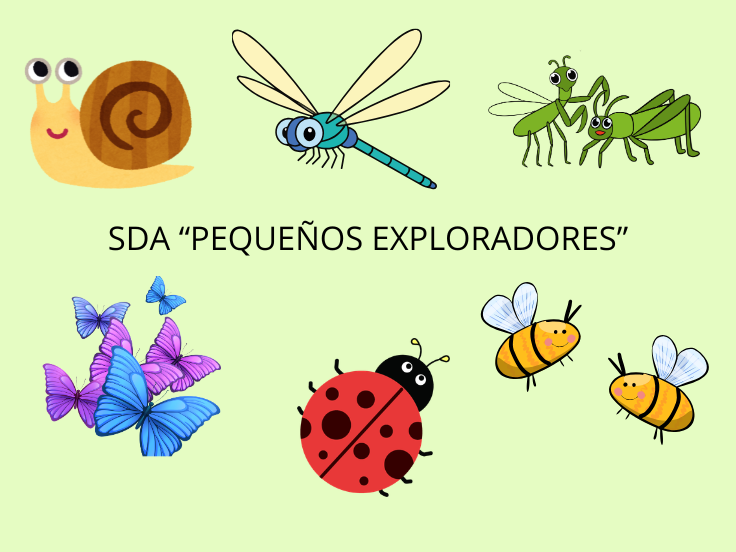

BIENVENIDOS
La situación de aprendizaje se titula "Pequeños exploradores" y tiene como centro de interés los bichos, ya que son seres vivos cercanos al entorno cotidiano del alumnado y despiertan de forma natural su curiosidad. Esta propuesta está dirigida a niños y niñas de 4 años, una etapa en la que la exploración, la observación y el descubrimiento del medio sin fundamentales para su desarrollo.
A través de esta situación de aprendizaje se recogen todas las actividades, recursos y experiencias que se van a llevar a cabo. De la misma manera, se explica cómo se organiza la secuencia didáctica y cuales son los elementos principales, para que se entienda de forma clara todo el trabajo.
Así, "Pequeños exploradores" va a ser una experiencia divertida en la que aprenderán a respetar y cuidar su entorno más cercano.
